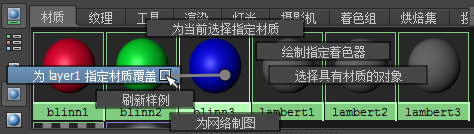
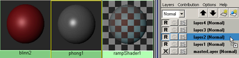
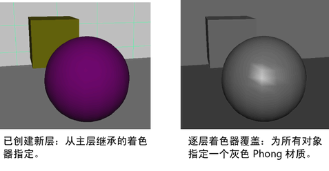

注： 提供的
新渲染设置系统现已取代传统渲染层，是 Maya 中的
默认系统。这种新方法可简化复杂场景的管理以便进行渲染，如今已成为建议的工作流。有关详细信息，请参见
Maya 渲染设置。
针对每一层覆盖材质和着色器：方法 1
- 在“渲染层编辑器”(Render Layer editor)中，选择一个层。
- 选择“窗口 > 渲染编辑器 > Hypershade”(Windows > Rendering Editors > Hypershade)。
- 从“Hypershade”中选择材质或创建新材质，然后通过单击鼠标右键并从标记菜单中选择“指定材质覆盖”(Assign Material Override)来进行指定。

这将创建材质和将覆盖指定给当前层上的对象的所有着色器的指定。
针对每一层覆盖材质和着色器：方法 2
- 也可以按照以下方法针对每一层覆盖材质和着色器：在“渲染层编辑器”(Render Layer editor)中，在某一层上单击鼠标右键，然后从出现的菜单中选择“覆盖 > 创建新的材质覆盖”(Overrides > Create New Material Override)或“指定现有材质覆盖”(Assign Existing Material Override)。
不需要选择层即可使用上下文相关菜单；在未选定的层上单击鼠标右键仍可覆盖其材质。
针对每一层覆盖材质和着色器：方法 3
- 从“Hypershade”中选择材质或创建新材质。若要将该材质指定给层，请选择相应的层并使用鼠标中键将材质样例拖放到对象上。


移除材质覆盖
- 在层上单击鼠标右键，然后从出现的菜单中选择“覆盖 > 移除材质覆盖”(Overrides > Remove Material Override)。
针对每一层覆盖层属性（渲染标志）
- 在“渲染层编辑器”(Render Layer editor)中，选择一个层。
- 打开属性编辑器，方法是在层上单击鼠标右键并从出现的菜单中选择“属性”(Attributes)。
将显示层属性的“成员覆盖”(Member Overrides)区域。
- 单击某个渲染复选框（例如，禁用“运动模糊”(Motion Blur)，禁用“投射阴影”(Cast Shadows)，或为该层中的所有对象指定一个着色组）。
针对每一层覆盖渲染设置（包括渲染器）
- 在“渲染层编辑器”(Render Layer editor)中，选择一个层。
- 打开“渲染设置”(Render Settings)；例如，通过单击层上的控制（渲染设置）图标 ，或选择“窗口 > 渲染编辑器 > 渲染设置”(Windows > Rendering Editors > Render Settings)。
- 在某个设置名称上单击鼠标右键，然后从出现的菜单中选择“创建层覆盖”(Create Layer Override)。
可针对每一层覆盖的设置包括：“使用以下渲染器渲染”(Render Using)、“边缘抗锯齿”(Edge Anti-Aliasing)、“大小单位”(Size Units)和“分辨率单位”(Resolution Units)。
应用渲染设置覆盖后，层上的隔板图标将显示为彩色（红色）。
移除渲染标志覆盖
- 在层上单击鼠标右键，然后从出现的菜单中选择“覆盖 > 移除渲染标志覆盖”(Overrides > Remove Render Flag Overrides)。
移除渲染设置覆盖
- 在层上单击鼠标右键，然后从出现的菜单中选择“覆盖 > 移除渲染设置覆盖”(Overrides > Remove Render Setting Overrides)。
注： 不能在主层上创建覆盖：在主层上对渲染设置所做的任何更改都将传播到源于它的所有层。